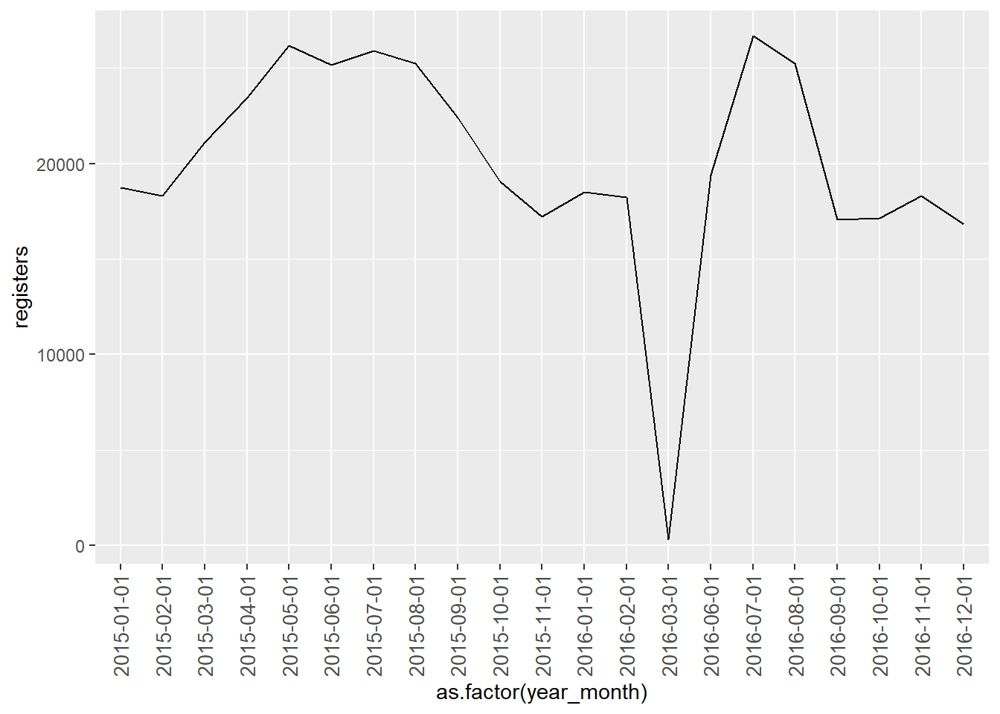
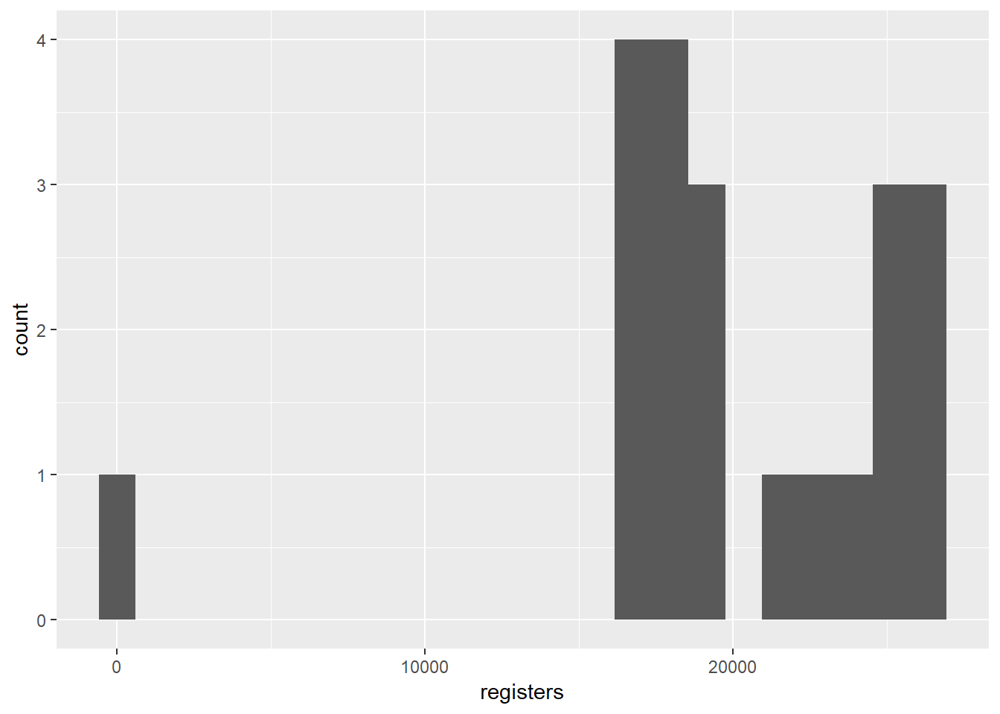

2 Desarrollo del reto SUNLAB.
2.1 Carga de las librerias necesarias.
Cargamos los paquetes que vamos a necesitar para el análisis
library(tidyverse)
library(lubridate)
library(readxl)
library(VIM)
library(GGally)
library(caret)2.2 Importación de los datos.
2.2.1 Datos “train”.
Los cuatro archivos de “train” facilitados en formato xls parecían tener algún tipo de problema. No fuimos capaces de importarlo en R en ese formato. Así que los convertimos previamente en formato csv. En este ocasión lo que hemos hecho es ir a la página de EDP de Open Data y descargar los archivos directamente en formato csv.
Estos archivos csv utilizan como separador el punto y coma, en vez de la coma. Así que en este caso tendremos que utilizar la función read_delim() con el argumento delim = “;”.
meteo_2015 <- read_delim(file = "./data/train/sunlab-faro_meteo_2015.csv", delim = ";")
meteo_2016 <- read_delim(file = "./data/train/sunlab-faro-meteo-2016.csv", delim = ";")
prod_2015 <- read_delim(file = "./data/train/sunlab-faro-pv-2015.csv", delim = ";")
prod_2016 <- read_delim(file = "./data/train/sunlab-faro-pv-2016.csv", delim = ";")2.2.2 Datos “test”.
En este caso las tablas a importar estaban en formato xlsx y no tuvimos ningún problema a la hora de importarlas. Así que esta vez utilizaremos los archivos facilitados durante el Hackathon.
test_meteo_2017 <- read_xlsx(path = "./data/test/test-sunlab-meteo-2017.xlsx")
test_prod_2017 <- read_xlsx(path = "./data/test/test-sunlab-pv-2017.xlsx")2.3 Exploración y tratamiento de los datos.
Unimos las tablas de distintos años de meteo y producción y nos quedamos con dos únicas tablas de train.
meteo_2015_2016 <- bind_rows(meteo_2015, meteo_2016)
prod_2015_2016 <- bind_rows(prod_2015, prod_2016)Borramos las tablas anteriores de train para que no nos ocupen espacio en memoria
rm(meteo_2015)
rm(meteo_2016)
rm(prod_2015)
rm(prod_2016)Echamos un vistazo a las variables y observaciones de la tabla de producción.
glimpse(prod_2015_2016)## Observations: 420,507
## Variables: 25
## $ Datetime <dttm> 2015-01-09 12:52:00, 2015-0...
## $ `A_Vertical - Voltage DC [V]` <dbl> 29.35, 29.10, 29.10, 29.35, ...
## $ `A_Vertical - Current DC [A]` <dbl> 6.4125, 6.3975, 6.3325, 6.41...
## $ `A_Vertical - Power DC [W]` <dbl> 188.206875, 186.167250, 184....
## $ `A_Optimal - Voltage DC [V]` <dbl> 28.75, 28.45, 28.45, 28.75, ...
## $ `A_Optimal - Current DC [A]` <dbl> 7.1700, 7.1925, 7.0925, 7.21...
## $ `A_Optimal - Power DC [W]` <dbl> 206.13750, 204.62662, 201.78...
## $ `A_Horizontal - Voltage DC [V]` <dbl> 29.25, 29.50, 29.45, 29.50, ...
## $ `A_Horizontal - Current DC [A]` <dbl> 4.3225, 4.2525, 4.1825, 4.30...
## $ `A_Horizontal - Power DC [W]` <dbl> 126.43313, 125.44875, 123.17...
## $ `A_Vertical - Temperature [ºC]` <dbl> 32.6, 32.4, 33.2, 32.2, 32.8...
## $ `A_Optimal - Temperature [ºC]` <dbl> 28.8, 28.6, 29.4, 28.2, 27.8...
## $ `A_Horizontal - Temperature [ºC]` <dbl> 26.5, 26.1, 26.8, 26.4, 26.1...
## $ `B_Vertical - Voltage DC [V]` <dbl> 27.55, 27.60, 27.40, 27.40, ...
## $ `B_Vertical - Current DC [A]` <dbl> 7.0925, 7.0475, 7.0100, 7.14...
## $ `B_Vertical - Power DC [W]` <dbl> 195.39837, 194.51100, 192.07...
## $ `B_Optimal - Voltage DC [V]` <dbl> 27.85, 28.05, 27.85, 28.05, ...
## $ `B_Optimal - Current DC [A]` <dbl> 7.2225, 7.1125, 7.0450, 7.17...
## $ `B_Optimal - Power DC [W]` <dbl> 201.14663, 199.50563, 196.20...
## $ `B_Horizontal - Voltage DC [V]` <dbl> 29.05, 29.05, 28.75, 28.95, ...
## $ `B_Horizontal - Current DC [A]` <dbl> 4.1775, 4.1275, 4.1125, 4.19...
## $ `B_Horizontal - Power DC [W]` <dbl> 121.356375, 119.903875, 118....
## $ `B_Vertical - Temperature [ºC]` <dbl> 31.2, 31.5, 31.9, 31.7, 32.2...
## $ `B_Optimal - Temperature [ºC]` <dbl> 30.2, 30.0, 30.9, 29.9, 30.7...
## $ `B_Horizontal - Temperature [ºC]` <dbl> 25.3, 24.9, 25.7, 25.1, 25.6...Vemos también los primeros 10 registros.
head(prod_2015_2016, 10)## # A tibble: 10 x 25
## Datetime `A_Vertical - V~ `A_Vertical - C~ `A_Vertical - P~
## <dttm> <dbl> <dbl> <dbl>
## 1 2015-01-09 12:52:00 29.4 6.41 188.
## 2 2015-01-09 12:14:00 29.1 6.40 186.
## 3 2015-01-09 13:19:00 29.1 6.33 184.
## 4 2015-01-09 12:41:00 29.4 6.41 188.
## 5 2015-01-09 13:07:00 29.1 6.40 186.
## 6 2015-01-09 12:57:00 29 6.46 187.
## 7 2015-01-09 13:04:00 29.3 6.40 187.
## 8 2015-01-09 13:20:00 29.1 6.32 184.
## 9 2015-01-09 13:16:00 29.1 6.38 186.
## 10 2015-01-09 12:48:00 29.3 6.44 189.
## # ... with 21 more variables: `A_Optimal - Voltage DC [V]` <dbl>,
## # `A_Optimal - Current DC [A]` <dbl>, `A_Optimal - Power DC [W]` <dbl>,
## # `A_Horizontal - Voltage DC [V]` <dbl>, `A_Horizontal - Current DC
## # [A]` <dbl>, `A_Horizontal - Power DC [W]` <dbl>, `A_Vertical -
## # Temperature [ºC]` <dbl>, `A_Optimal - Temperature [ºC]` <dbl>,
## # `A_Horizontal - Temperature [ºC]` <dbl>, `B_Vertical - Voltage DC
## # [V]` <dbl>, `B_Vertical - Current DC [A]` <dbl>, `B_Vertical - Power
## # DC [W]` <dbl>, `B_Optimal - Voltage DC [V]` <dbl>, `B_Optimal -
## # Current DC [A]` <dbl>, `B_Optimal - Power DC [W]` <dbl>, `B_Horizontal
## # - Voltage DC [V]` <dbl>, `B_Horizontal - Current DC [A]` <dbl>,
## # `B_Horizontal - Power DC [W]` <dbl>, `B_Vertical - Temperature
## # [ºC]` <dbl>, `B_Optimal - Temperature [ºC]` <dbl>, `B_Horizontal -
## # Temperature [ºC]` <dbl>¿Cada cuánto tiempo está registrada una medición en la tabla?
# Si fuese una medición cada minuto el número de mediciones entre 2015 y 2016 sería 1.051.200, y en la tabla solo hay 420.507 registros:
2*365*24*60## [1] 1051200Si vemos el conteo de registros por año vemos que en 2016 hay sensiblemente menos registros que en 2015.
registers_by_year <- prod_2015_2016 %>%
select(Datetime) %>%
group_by(year = year(prod_2015_2016$Datetime)) %>%
summarise(registers = n())
registers_by_year## # A tibble: 2 x 2
## year registers
## <int> <int>
## 1 2015 242735
## 2 2016 177772Vemos la distribución por año-mes
registers_by_year_month <- prod_2015_2016 %>%
select(Datetime) %>%
group_by(year = year(prod_2015_2016$Datetime),
month = month(prod_2015_2016$Datetime)) %>%
summarise(registers = n())
registers_by_year_month## # A tibble: 21 x 3
## # Groups: year [2]
## year month registers
## <int> <int> <int>
## 1 2015 1 18730
## 2 2015 2 18297
## 3 2015 3 21094
## 4 2015 4 23460
## 5 2015 5 26183
## 6 2015 6 25146
## 7 2015 7 25908
## 8 2015 8 25252
## 9 2015 9 22380
## 10 2015 10 19067
## # ... with 11 more rowsHay bastantes variaciones en el número de registros de cada mes. Esto podría introducir sesgos a la hora de modelar, ya que en principio no sabemos a qué se deben estas variaciones. A destacar que en diciembre de 2015 no hay ningún registro y el bajísimo número de registros del mes de marzo de 2016.
registers_by_year_month_1 <- registers_by_year_month %>%
mutate(day = "01") %>%
unite(year_month, year, month, day, sep = '-') %>%
mutate(year_month = ymd(year_month))
ggplot(data = registers_by_year_month_1, aes(x = as.factor(year_month), y = registers, group = 1)) +
geom_line() +
theme(axis.text.x=element_text(angle=90,hjust=1,vjust=0.5, size = 10))
summary(registers_by_year_month_1) ## year_month registers
## Min. :2015-01-01 Min. : 342
## 1st Qu.:2015-06-01 1st Qu.:18250
## Median :2015-11-01 Median :19067
## Mean :2015-12-05 Mean :20024
## 3rd Qu.:2016-07-01 3rd Qu.:25146
## Max. :2016-12-01 Max. :26682summary(registers_by_year_month_1) ## year_month registers
## Min. :2015-01-01 Min. : 342
## 1st Qu.:2015-06-01 1st Qu.:18250
## Median :2015-11-01 Median :19067
## Mean :2015-12-05 Mean :20024
## 3rd Qu.:2016-07-01 3rd Qu.:25146
## Max. :2016-12-01 Max. :26682ggplot(data = registers_by_year_month_1, aes(x = registers)) +
geom_histogram(bins = 23) 
Todos los meses, excepto 2, se encuentran entre los 18.000 y 27.000 registros. Lo que parece significar que más o menos hay un registro cada aproximadamente 2 minutos.
Vamos a estimar la frecuencia de los registros. Para ello restaremos a cada Datetime de cada registro su correspondiente Datetime anterior (Datetime_lagged) creando la variable time_diff, que nos dirá los minutos trascurridos entre cada registro. Una vez hecho esto hacemos un simple conteo de todas las diferencias entre registros.
register_frequency <- prod_2015_2016 %>%
select(Datetime) %>%
arrange(Datetime) %>%
mutate(Datetime_lagged = lag(Datetime)) %>%
mutate(time_diff = Datetime - Datetime_lagged) %>%
na.omit()
intervals_count <- register_frequency %>%
select(time_diff) %>%
group_by(time_diff) %>%
summarise(n = n()) %>%
arrange(desc(n))
head(intervals_count, 20)## # A tibble: 20 x 2
## time_diff n
## <time> <int>
## 1 1 mins 419840
## 2 2 mins 29
## 3 6 mins 11
## 4 7 mins 11
## 5 579 mins 10
## 6 8 mins 9
## 7 566 mins 9
## 8 565 mins 8
## 9 572 mins 8
## 10 855 mins 8
## 11 569 mins 7
## 12 854 mins 7
## 13 570 mins 6
## 14 587 mins 6
## 15 777 mins 6
## 16 809 mins 6
## 17 833 mins 6
## 18 563 mins 5
## 19 568 mins 5
## 20 577 mins 5Lo que vemos es que en principio parece que el registro de mediciones está programado para realizarse cada minuto, porque este es con diferencia el intervalo entre registros más frecuente.
2.3.1 Tablas en formato largo
Respecto al formato de las variables parecen todas tener el formato adecuado. Lo único que llama la atención es cómo distingue qué valores corresponden a los paneles de tipo A de los de tipo B, con una “A” o una “B” al principio de cada nombre de variable, y cómo incluye también la información de la orientación, también en el nombre de la variable, con los términos “Horizontal”, “Vertical” y “Optimal”. Quizás una forma mejor de ordenar los datos sería creando otras dos variables de formato factor, una para distinguir los paneles y otra la configuración.
Para ello lo primero que haremos será transformar a formato “largo” la tabla, reduciendo las 25 variables actuales a únicamente 2: ‘Datetime’ y ‘Measure’. Y justo después de esta transformación creamos tres nuevas variables que se referirán al tipo de panel (panel_type), la configuración del mismo (set_type) y finalmente el tipo de medición en cuestión (measure).
A continuación simplemente mostramos cómo quedará la tabla en formato “largo”.
prod_2015_2016_long_example <- prod_2015_2016 %>%
gather('panel_set_measure', 'value', 2:25)
head(prod_2015_2016_long_example, 10) ## # A tibble: 10 x 3
## Datetime panel_set_measure value
## <dttm> <chr> <dbl>
## 1 2015-01-09 12:52:00 A_Vertical - Voltage DC [V] 29.4
## 2 2015-01-09 12:14:00 A_Vertical - Voltage DC [V] 29.1
## 3 2015-01-09 13:19:00 A_Vertical - Voltage DC [V] 29.1
## 4 2015-01-09 12:41:00 A_Vertical - Voltage DC [V] 29.4
## 5 2015-01-09 13:07:00 A_Vertical - Voltage DC [V] 29.1
## 6 2015-01-09 12:57:00 A_Vertical - Voltage DC [V] 29
## 7 2015-01-09 13:04:00 A_Vertical - Voltage DC [V] 29.3
## 8 2015-01-09 13:20:00 A_Vertical - Voltage DC [V] 29.1
## 9 2015-01-09 13:16:00 A_Vertical - Voltage DC [V] 29.1
## 10 2015-01-09 12:48:00 A_Vertical - Voltage DC [V] 29.3Y aquí el código completo para esta transformación.
prod_2015_2016_long <- prod_2015_2016 %>%
gather('panel_set_measure', 'value', 2:25) %>%
rename(datetime = Datetime) %>%
mutate(panel_type = as.factor(str_sub(panel_set_measure, start = 1, end = 1)),
set_type = as.factor(ifelse(grepl('Vertical', panel_set_measure), 'Vertical',
ifelse(grepl('Horizontal', panel_set_measure), 'Horizontal', 'Optimal'))),
measure = as.factor(ifelse(grepl('Temperature', panel_set_measure), 'Temperature_DC_C',
ifelse(grepl('Voltage', panel_set_measure), 'Voltage_DC_V',
ifelse(grepl('Power', panel_set_measure), 'Power_DC_W', 'Current_DC_A'))))) %>%
select(-panel_set_measure)Así ya nos queda una tabla con un formato más ordenado.
head(prod_2015_2016_long, 10) ## # A tibble: 10 x 5
## datetime value panel_type set_type measure
## <dttm> <dbl> <fct> <fct> <fct>
## 1 2015-01-09 12:52:00 29.4 A Vertical Voltage_DC_V
## 2 2015-01-09 12:14:00 29.1 A Vertical Voltage_DC_V
## 3 2015-01-09 13:19:00 29.1 A Vertical Voltage_DC_V
## 4 2015-01-09 12:41:00 29.4 A Vertical Voltage_DC_V
## 5 2015-01-09 13:07:00 29.1 A Vertical Voltage_DC_V
## 6 2015-01-09 12:57:00 29 A Vertical Voltage_DC_V
## 7 2015-01-09 13:04:00 29.3 A Vertical Voltage_DC_V
## 8 2015-01-09 13:20:00 29.1 A Vertical Voltage_DC_V
## 9 2015-01-09 13:16:00 29.1 A Vertical Voltage_DC_V
## 10 2015-01-09 12:48:00 29.3 A Vertical Voltage_DC_VEchamos un vistazo con un summary()
summary(prod_2015_2016_long)## datetime value panel_type
## Min. :2015-01-01 07:40:00 Min. : 0.00 A:5046084
## 1st Qu.:2015-05-28 18:54:00 1st Qu.: 6.50 B:5046084
## Median :2015-10-08 17:39:00 Median : 26.90
## Mean :2015-12-04 18:29:34 Mean : 35.51
## 3rd Qu.:2016-07-19 14:48:00 3rd Qu.: 34.40
## Max. :2016-12-29 17:31:00 Max. :307.64
## NA's :183579
## set_type measure
## Horizontal:3364056 Current_DC_A :2523042
## Optimal :3364056 Power_DC_W :2523042
## Vertical :3364056 Temperature_DC_C:2523042
## Voltage_DC_V :2523042
##
##
## Y aplicamos la misma transformación al dataset de test
test_prod_2017_long <- test_prod_2017 %>%
gather('panel_set_measure', 'value', 2:25) %>%
rename(datetime = Datetime) %>%
mutate(panel_type = as.factor(str_sub(panel_set_measure, start = 1, end = 1)),
set_type = as.factor(ifelse(grepl('Vertical', panel_set_measure), 'Vertical',
ifelse(grepl('Horizontal', panel_set_measure), 'Horizontal', 'Optimal'))),
measure = as.factor(ifelse(grepl('Temperature', panel_set_measure), 'Temperature_DC_C',
ifelse(grepl('Voltage', panel_set_measure), 'Voltage_DC_V',
ifelse(grepl('Power', panel_set_measure), 'Power_DC_W', 'Current_DC_A'))))) %>%
select(-panel_set_measure)Este formato largo nos ayudará sobre todo a la hora de realizar visualizaciones con ggplot2, que requiere este tipo de estructura.
2.3.2 Formato semi-largo
También puede que necesitamos una estructura a medio camino entre las dos que tenemos hasta ahora. Que sería básicamente coger las tablas en formato largo y “extender” la variable “value” por tipo de “measure”.
Lo hacemos con los datos de train.
prod_2015_2016_semi_long <- prod_2015_2016_long %>%
spread(measure, value)
head(prod_2015_2016_semi_long)## # A tibble: 6 x 7
## datetime panel_type set_type Current_DC_A Power_DC_W
## <dttm> <fct> <fct> <dbl> <dbl>
## 1 2015-01-01 07:40:00 A Horizon~ NA NA
## 2 2015-01-01 07:40:00 A Optimal NA NA
## 3 2015-01-01 07:40:00 A Vertical NA NA
## 4 2015-01-01 07:40:00 B Horizon~ NA NA
## 5 2015-01-01 07:40:00 B Optimal NA NA
## 6 2015-01-01 07:40:00 B Vertical NA NA
## # ... with 2 more variables: Temperature_DC_C <dbl>, Voltage_DC_V <dbl>Y con los de test.
test_prod_2017_semi_long <- test_prod_2017_long %>%
spread(measure, value)
head(test_prod_2017_semi_long)## # A tibble: 6 x 7
## datetime panel_type set_type Current_DC_A Power_DC_W Temperature_DC_C
## <chr> <fct> <fct> <dbl> <dbl> <dbl>
## 1 2017-01~ A Horizon~ 0.065 1.22 3.3
## 2 2017-01~ A Optimal 0.108 NA 4
## 3 2017-01~ A Vertical 0.075 1.44 4.5
## 4 2017-01~ B Horizon~ 0.108 2.31 3.2
## 5 2017-01~ B Optimal 0.0825 NA 4.1
## 6 2017-01~ B Vertical 0.07 1.32 4.8
## # ... with 1 more variable: Voltage_DC_V <dbl>2.4 Generación de modelos base con R.
El problema a resolver es predecir la producción eléctrica en Watios que pueden generar los paneles A y B en su orientación óptima durante los siete primeros días del año 2017.
Antes de ver la influencia que puede tener los datos meteorológicos en la producción vamos a intentar ver si simplemente con los datos que tenemos en la tabla de producción podemos hacer ya alguna aproximación.
Para ello vamos a dividir la tabla de producción que tenemos en formato semilargo en dos datasets, uno para realizar el training y otro para ir realizando validaciones de los modelos y poder detectar problemas de overfitting.
Train period: 01-01-2015 - 30-09-2016 Validation period: 01-10-2016 - 31-12-2016
2.4.1 Modelos base para paneles A
train_period_A <- prod_2015_2016_semi_long %>%
filter(datetime <= '2016-09-30 23:59:59',
panel_type == "A",
set_type == "Optimal") %>%
select(-panel_type,
-set_type) %>%
na.omit()
validation_period_A <- prod_2015_2016_semi_long %>%
filter(datetime > '2016-09-30 23:59:59',
panel_type == "A",
set_type == "Optimal") %>%
select(-panel_type,
-set_type) %>%
na.omit()Vemos la tabla
head(train_period_A)## # A tibble: 6 x 5
## datetime Current_DC_A Power_DC_W Temperature_DC_C Voltage_DC_V
## <dttm> <dbl> <dbl> <dbl> <dbl>
## 1 2015-01-01 07:47:00 0.0725 1.70 6 23.4
## 2 2015-01-01 07:48:00 0.0775 1.81 5.9 23.3
## 3 2015-01-01 07:49:00 0.0825 1.93 5.9 23.4
## 4 2015-01-01 07:50:00 0.0875 2.05 5.8 23.4
## 5 2015-01-01 07:51:00 0.095 2.22 5.7 23.4
## 6 2015-01-01 07:52:00 0.1 2.34 5.7 23.42.4.1.1 Linear regression
En el primer modelo intentamos explicar Power_DC_W en función de las otras tres variables
model_lr_1 <- lm(data = train_period_A, Power_DC_W ~ Current_DC_A + Temperature_DC_C + Voltage_DC_V)
print(model_lr_1)##
## Call:
## lm(formula = Power_DC_W ~ Current_DC_A + Temperature_DC_C + Voltage_DC_V,
## data = train_period_A)
##
## Coefficients:
## (Intercept) Current_DC_A Temperature_DC_C Voltage_DC_V
## -26.3277 27.8013 -0.1674 1.1714summary(model_lr_1)##
## Call:
## lm(formula = Power_DC_W ~ Current_DC_A + Temperature_DC_C + Voltage_DC_V,
## data = train_period_A)
##
## Residuals:
## Min 1Q Median 3Q Max
## -47.199 -2.103 -0.400 1.312 24.317
##
## Coefficients:
## Estimate Std. Error t value Pr(>|t|)
## (Intercept) -2.633e+01 7.359e-02 -357.7 <2e-16 ***
## Current_DC_A 2.780e+01 3.166e-03 8781.0 <2e-16 ***
## Temperature_DC_C -1.674e-01 8.502e-04 -196.9 <2e-16 ***
## Voltage_DC_V 1.171e+00 2.636e-03 444.4 <2e-16 ***
## ---
## Signif. codes: 0 '***' 0.001 '**' 0.01 '*' 0.05 '.' 0.1 ' ' 1
##
## Residual standard error: 3.734 on 361001 degrees of freedom
## Multiple R-squared: 0.9972, Adjusted R-squared: 0.9972
## F-statistic: 4.31e+07 on 3 and 361001 DF, p-value: < 2.2e-16Pues el modelo resultante en principio es muy bueno, ya que estamos hablando de un R cuadrado de casi 1. Y el p-value es pequeñísimo. Aparecen las tres variables como significativas.
Vamos a calcular el MAE, que forzosamente tendrá que ser muy bajo.
# Extraemos los fitted_values (las predicciones) del modelo para compararlos con los valores reales
predicted_values <- as.data.frame(model_lr_1$fitted.values)
real_values <- as.data.frame(train_period_A$Power_DC_W)
mae_train <- bind_cols(predicted_values,
real_values) %>%
rename(predicted_values = 'model_lr_1$fitted.values',
real_values = 'train_period_A$Power_DC_W') %>%
mutate(abs_error = abs(real_values - predicted_values)) %>%
summarise(mae = mean(abs_error))
mae_train## mae
## 1 2.599066Utilizamos este modelo inicial para hacer las predicciones con el periodo de validación
validation_predicted_values <- as.data.frame(predict(model_lr_1, validation_period_A))
validation_real_values <- as.data.frame(validation_period_A$Power_DC_W)
mae_validation <- bind_cols(validation_predicted_values,
validation_real_values) %>%
rename(predicted_values = 'predict(model_lr_1, validation_period_A)',
real_values = 'validation_period_A$Power_DC_W') %>%
mutate(abs_error = abs(real_values - predicted_values)) %>%
summarise(mae = mean(abs_error))
mae_validation## mae
## 1 2.691831rss <- sum((validation_predicted_values - validation_real_values) ^ 2) ## residual sum of squares
tss <- sum((validation_real_values - mean(validation_real_values$`validation_period_A$Power_DC_W`)) ^ 2) ## total sum of squares
R_Squared <- 1 - rss/tss
R_Squared## [1] 0.9974431Al validar el modelo con el último trimestre de 2016 obtenemos resultados muy parecidos. El modelo es casi perfecto. Y no hemos necesitado utilizar la tabla con datos meteorológicos. ¿Qué está pasando?
model_lr_2 <- lm(data = train_period_A, Power_DC_W ~ Current_DC_A)
print(model_lr_2)##
## Call:
## lm(formula = Power_DC_W ~ Current_DC_A, data = train_period_A)
##
## Coefficients:
## (Intercept) Current_DC_A
## 0.7936 27.8372summary(model_lr_2)##
## Call:
## lm(formula = Power_DC_W ~ Current_DC_A, data = train_period_A)
##
## Residuals:
## Min 1Q Median 3Q Max
## -57.135 -2.065 -0.773 2.152 30.051
##
## Coefficients:
## Estimate Std. Error t value Pr(>|t|)
## (Intercept) 0.793620 0.013956 56.87 <2e-16 ***
## Current_DC_A 27.837231 0.003179 8755.82 <2e-16 ***
## ---
## Signif. codes: 0 '***' 0.001 '**' 0.01 '*' 0.05 '.' 0.1 ' ' 1
##
## Residual standard error: 4.845 on 361003 degrees of freedom
## Multiple R-squared: 0.9953, Adjusted R-squared: 0.9953
## F-statistic: 7.666e+07 on 1 and 361003 DF, p-value: < 2.2e-16model_lr_3 <- lm(data = train_period_A, Power_DC_W ~ Temperature_DC_C)
print(model_lr_3)##
## Call:
## lm(formula = Power_DC_W ~ Temperature_DC_C, data = train_period_A)
##
## Coefficients:
## (Intercept) Temperature_DC_C
## -30.427 4.446summary(model_lr_3)##
## Call:
## lm(formula = Power_DC_W ~ Temperature_DC_C, data = train_period_A)
##
## Residuals:
## Min 1Q Median 3Q Max
## -167.315 -39.684 -3.898 40.017 271.442
##
## Coefficients:
## Estimate Std. Error t value Pr(>|t|)
## (Intercept) -30.42716 0.33175 -91.72 <2e-16 ***
## Temperature_DC_C 4.44553 0.01077 412.79 <2e-16 ***
## ---
## Signif. codes: 0 '***' 0.001 '**' 0.01 '*' 0.05 '.' 0.1 ' ' 1
##
## Residual standard error: 58.33 on 361003 degrees of freedom
## Multiple R-squared: 0.3207, Adjusted R-squared: 0.3207
## F-statistic: 1.704e+05 on 1 and 361003 DF, p-value: < 2.2e-16model_lr_4 <- lm(data = train_period_A, Power_DC_W ~ Voltage_DC_V)
print(model_lr_4)##
## Call:
## lm(formula = Power_DC_W ~ Voltage_DC_V, data = train_period_A)
##
## Coefficients:
## (Intercept) Voltage_DC_V
## -185.57 10.41summary(model_lr_4)##
## Call:
## lm(formula = Power_DC_W ~ Voltage_DC_V, data = train_period_A)
##
## Residuals:
## Min 1Q Median 3Q Max
## -182.047 -57.724 -5.642 57.626 181.430
##
## Coefficients:
## Estimate Std. Error t value Pr(>|t|)
## (Intercept) -185.57192 1.20693 -153.8 <2e-16 ***
## Voltage_DC_V 10.41414 0.04375 238.0 <2e-16 ***
## ---
## Signif. codes: 0 '***' 0.001 '**' 0.01 '*' 0.05 '.' 0.1 ' ' 1
##
## Residual standard error: 65.8 on 361003 degrees of freedom
## Multiple R-squared: 0.1357, Adjusted R-squared: 0.1356
## F-statistic: 5.666e+04 on 1 and 361003 DF, p-value: < 2.2e-16